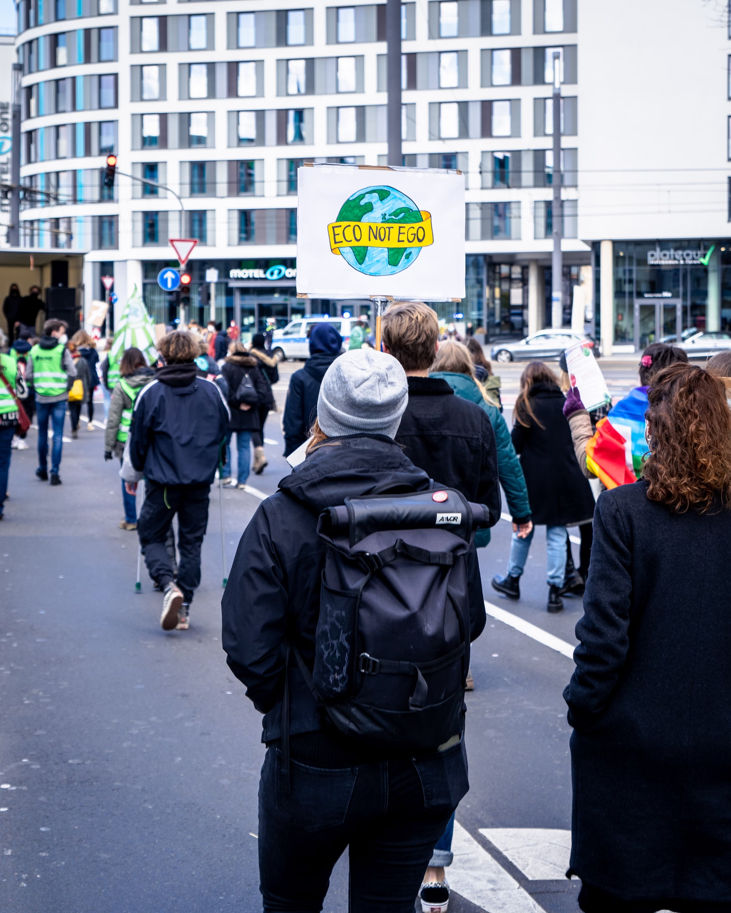
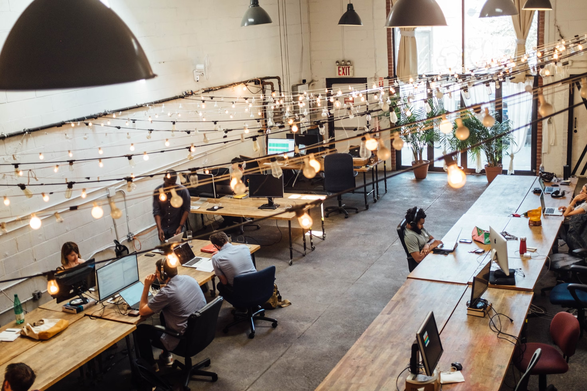
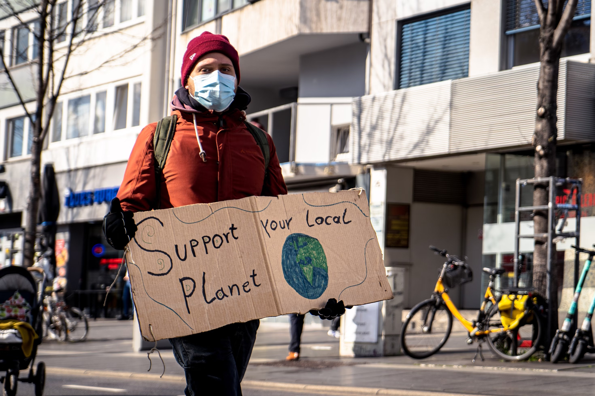

History
Sustainably Styled is a brand new environmental-friendly clothing brands that looks to equally put in as much care into the products it offers as its impact on OUR global planet.  The company was founded in 2023 by Vincent Hultsch as he kept being upset at the careless nature most indivduals treat their clothes.
The company was founded in 2023 by Vincent Hultsch as he kept being upset at the careless nature most indivduals treat their clothes.
He embraked on a journey of securing the most humane and pro-earth supply chain possible for his products and has bulid out a great team of experts to aid him in growing the brand
Commitments
Sustainably Styled is a brand that prides itself on putting its money where its mouth here here are our Commitments
- 90% of Profits are recommited to environmental-friendly work
- 100% of the materials used in the final products are recycled 
- By 2030, have entirely in-house complete production to ensure quality and practices
- For each online purchase by a customer 5 trees are planeted
Practices
Sustainably Styled believes in the motto "Looking Good and Feeling Good" should extend to OUR planet as well.  In each manufactoring faculty there are measures in place to ensure only recycled materials are used in production, minmimal water usage as well as any other IP and technology protections for local employees. This has created a system of everyones incentives being aligned to constantly innovate on process and result to create the best solution for the Earth and members of our valued community. Remember the clothing must be kind to you and to OUR planet! Listen to our head of operations, Susta
Contact Us
Don't hesitate to reach out if you have any questions about the brand or any products! We believe the journey of sustainable business is one that includes all of us we want to hear from you!
Feel free to, email SustainablyStyled@SustainablyStyled.com or contact us via our webpage below!